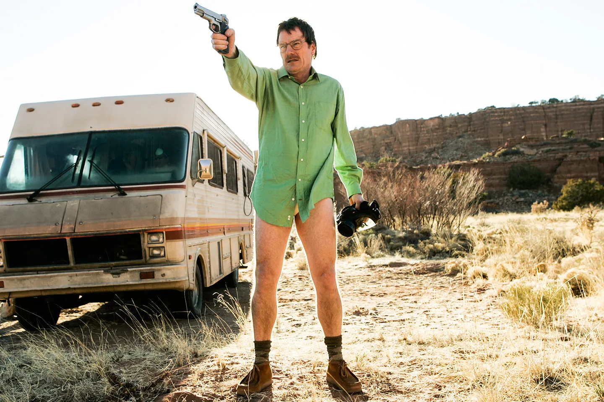
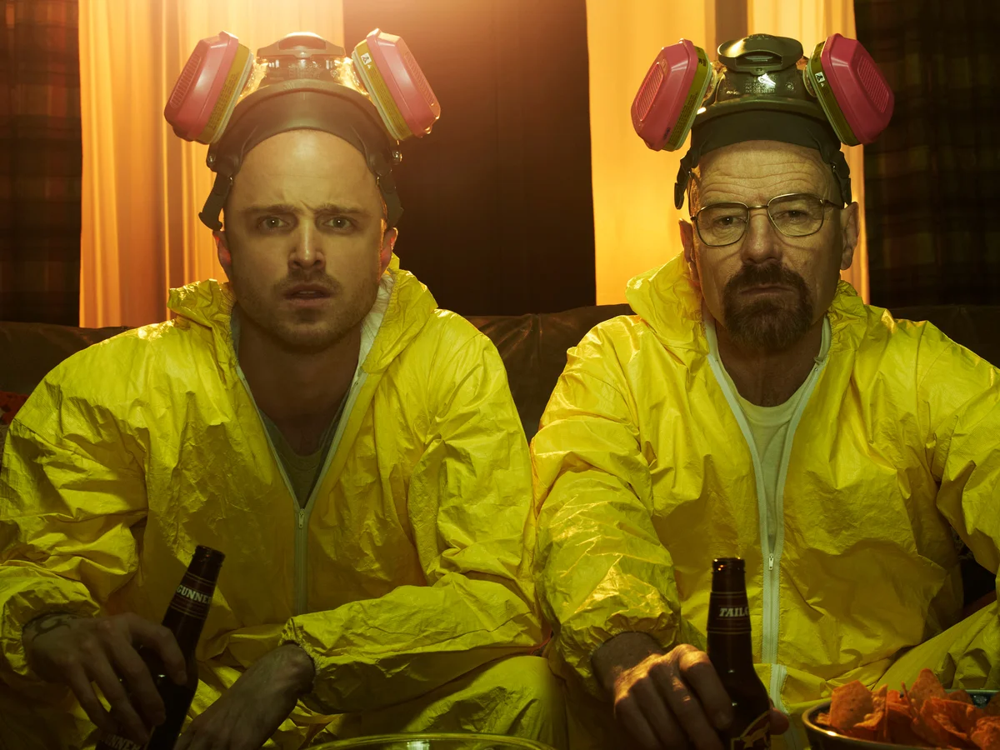

Donate
Help Save Walter White
My dad is amazing. It's funny, but I didn't know that until I found out he was going to die. That it was going to happen soon. That it was real. Then I thought about a lot of stuff. Things I hadn't thought about for a long time. I guess I kind of took him for granted or something. I mean, our parents are just always there. You expect them to always be bugging you to clean up your room or study harder or have good manners or try new things to grow up to be a more well-rounded person one day. And make you get up early on the weekend to have "family time" and all that other stuff that used to drive me crazy. I don't feel that way now; Everything's different since Dad got his diagnosis. Since I realized that one day in the near future, he might not be around to drive me crazy.
Now I feel lucky when he asks me about my day (I used to totally hate that question) or nags me about coming home on time at night and being respon- sible. One day he won't be here to ask. Now I feel lucky when I hear his car pulling into the driveway after school. I even like to hear him cough- ing. It means he's still around. Still my dad.

